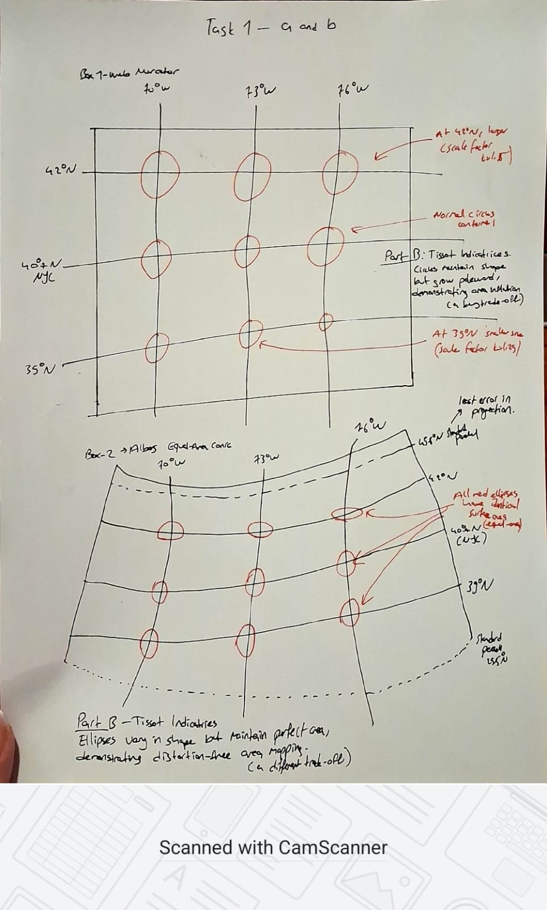

Mapping Space:
Projections, Labels & Density
NYC Taxi Mobility Data · April 5, 2016
In this project you will apply three core map-visualization techniques: compare how different map projections distort space, implement principled label placement on a live map, and reveal mobility patterns using kernel density estimation on real taxi-trip data.
Map Projections
Sketch and analyze two projections for a NYC-area map
✏️ Paper & PenLabel Placement
Apply conflict-free label placement to taxi pickup hotspots
💻 Coded (JS / OSM)Kernel Density
Estimate and visualize the density of taxi pickups
💻 Coded (JS / OSM)✏️ Map Projections — Paper & Pen
Understand how the choice of projection fundamentally alters spatial relationships — area, shape, distance, and direction — with specific focus on the New York City region.
Every flat map is a mathematical transformation of the spherical Earth. No single projection can simultaneously preserve area, shape, distance, and direction — each choice involves trade-offs. For this task you will compare two projections commonly used for maps of the north-eastern United States:
- Web Mercator (EPSG:3857) — a conformal (shape-preserving) cylindrical projection. It is the default for web maps (OpenStreetMap, Google Maps). At NYC's latitude (~40.7°N) it inflates areas by a factor of k² ≈ 1.72 relative to the equator. The city's grid looks "correct" locally, but the projection severely distorts area at higher latitudes.
- Albers Equal-Area Conic (EPSG:5070) — preserves area by using two standard parallels that hug the region of interest. For a map centred on NYC (standard parallels: 29.5°N and 45.5°N), shapes in the urban core are accurate and the scale error across the five boroughs is less than 0.1%. It is the standard projection for US Census and environmental data products.
| Property | Web Mercator | Albers Equal-Area Conic | Better for NYC? |
|---|---|---|---|
| Conformal (preserves shape) | ✅ Yes — locally | ❌ No (slight shape distortion) | Mercator |
| Equal-area (preserves area) | ❌ No (area inflated ×1.72 at NYC) | ✅ Yes | Albers |
| Scale error at 40.7°N | ~31% linear, ~72% area | < 0.1% (near standard parallels) | Albers |
| North-up orientation | ✅ Always | ✅ Yes (for standard orientation) | Tie |
| Compass bearing accuracy | ✅ Locally (rhumb lines are straight) | ❌ Meridians converge | Mercator |
| Best use case | Navigation, street-level web maps, tile servers | Thematic maps, density, area statistics | Depends on task |
On blank A4 paper, draw two side-by-side bounding boxes of identical width (approx. 10 cm each). Inside each box, sketch the graticule (meridians + parallels) for the region 70°W – 76°W, 40°N – 42°N (the NYC metro area, approximately) for each projection:
- Box 1 — Web Mercator: Draw a regular rectangular grid (meridians are vertical, parallels are horizontal). Mark at least 3 meridians and 3 parallels.
- Box 2 — Albers Equal-Area Conic (standard parallels 29.5°N, 45.5°N): Draw fan-shaped meridians converging toward an apex above the map, and curved parallels as arcs. At NYC's latitude your meridians should converge at an angle; calculate the convergence angle approximately as: n ≈ (sin 29.5° + sin 45.5°) / 2 ≈ 0.564, so meridians 6° apart converge by about 0.564 × 6° ≈ 3.4° at the northern edge.
Label the axes with degree values and note the projection name.
On your Part A sketches, draw Tissot indicatrix circles at the following three locations on each projection. Use the scale factors below to size them proportionally (let the equatorial/southern reference circle have radius 1 cm).
| Location | Lat | Mercator — linear scale k | Circle radius (cm) | Albers scale error |
|---|---|---|---|---|
| Southern NJ coast | 39°N | k = 1/cos(39°) ≈ 1.29 | 1.29 cm (Mercator) / 1.0 cm (Albers) | < 0.1% |
| Manhattan | 40.7°N | k = 1/cos(40.7°) ≈ 1.31 | 1.31 cm (Mercator) / ~1.0 cm (Albers) | < 0.1% |
| Upstate NY | 42°N | k = 1/cos(42°) ≈ 1.35 | 1.35 cm (Mercator) / ~1.0 cm (Albers) | < 0.2% |
Note: On Mercator, circles remain perfectly round (conformal) but grow. On Albers, circles stay nearly the same size but become slightly elliptical (area is preserved, shape is not). Sketch both effects clearly and annotate them.

In no more than 150 words, answer the following:
- You are designing an interactive web map for NYC taxi data (similar to Task 3 in this project). Which projection should the tile server use — Mercator or Albers? Why? (Consider: tile grid efficiency, user expectation for a city map, and the practical use case of the taxi density layer.)
- Now imagine instead you are producing a printed choropleth map of taxi pickup density per km² across the five NYC boroughs for a data journalism article. Does your answer change? Why or why not?
For an interactive web map of NYC taxi data, the tile server should use Web Mercator (EPSG:3857). Major basemap providers distribute square tiles in this projection, so adopting Mercator avoids costly reprojection, simplifies caching, and keeps the global tile pyramid standard. Users expect street layouts and north-up navigation familiar from everyday web maps. A taxi-density or KDE layer then aligns with the roads beneath it; at roughly 40.7°N local area inflation is moderate, so hotspot patterns remain readable even though areas are not strictly true-scale.
For a printed choropleth of pickup rates per km² across boroughs, I would change to Albers equal-area conic (or another equal-area projection for the Northeast). Choropleths invite area comparisons: equal-area guarantees polygon sizes on the page match geographic areas so per-km² values are comparable. Web Mercator would distort relative borough sizes and could mislead readers about which borough truly carries more activity per unit land.
Examine the two reference maps below (Figs 3 & 4). For each one, state: (1) the projection type (cylindrical / conic / azimuthal) and whether it is conformal, equal-area, or equidistant; (2) one visible clue in the graticule that supports your answer.
Fig 3 — Projection A. (1) Cylindrical projection; it is conformal (not equal-area or equidistant in the global sense). (2) Graticule clue: meridians are evenly spaced, perfectly straight vertical lines and parallels are straight horizontals, but the vertical gap between parallels increases strongly toward the pole; the red Tissot shapes stay round while their radius grows dramatically with latitude—local angles preserved, areas inflated poleward (Mercator-type behaviour).
Fig 4 — Projection B. (1) Conic projection; it is equal-area (not conformal). (2) Graticule clue: meridians are straight lines meeting at a common apex above the frame and parallels are curved arcs centred on that axis; Tissot figures are slightly elliptical yet similar in overall size across the map, signalling that area is held approximately constant while local shapes vary—typical of an equal-area conic (e.g., Albers-style).
🏷 Label Placement on a Live Map
Apply principled label placement rules to annotate the top pickup hotspots in the NYC Taxi dataset using Leaflet.js and OpenStreetMap tiles.
Placing labels on maps without overlap is a classic computational problem (NP-hard in general). In practice, cartographers apply a set of priority rules that produce good results:
- Priority 1 — Preferred positions: For point features, the upper-right position is preferred, then lower-right, upper-left, and lower-left. Never centre a label on its point.
- Priority 2 — Conflict avoidance: A label must not overlap its anchor marker, other labels, or map edges. Increase the offset until conflicts resolve.
- Priority 3 — Leader lines: If a label is displaced far from its marker (e.g., in dense areas), draw a thin leader line connecting the two.
- Priority 4 — Legibility: Use a contrasting halo (text shadow or white outline) so labels read over both light and dark basemap tiles. Font size ≥ 11px for primary labels.
- Priority 5 — Hierarchy: More important features get larger, bolder labels. Suppress less important labels before allowing overlap.
Load the provided NYC-5April2016-TaxiTrips.xlsx file. Important: the coordinates in the Excel file are stored as integers scaled by 1015 (longitude) and 1014 (latitude). Divide each column by the appropriate factor to recover decimal degrees (pickup longitude should be approximately −74, pickup latitude approximately 40.7).
Group the pickup points into grid cells of 0.01° × 0.01° (approximately 800 m × 800 m at NYC's latitude). Identify and label the top 10 cells by pickup count. These 10 cells are your label anchors. Display their centroids as circle markers, scaled by count.
For each of the 10 hotspot markers, implement label placement following the priority rules described above. Your implementation must:
- Attempt the upper-right position first (offset: +10px x, −20px y from marker centre)
- Fall back through positions ②–④ using a simple bounding-box overlap test against already-placed labels and the map edge
- Draw a thin leader line (e.g., 1px, colour #666) from marker to label whenever the label is not in position ①
- Apply a white text halo (CSS
text-shadowor SVGpaint-order: stroke) so labels read clearly over the basemap - Each label must display the rank (1–10) and pickup count (e.g., "3 · 47 trips")
In 100–200 words per question, answer both of the following:
- C1 — Zoom in on Manhattan. At zoom level 14, do any of your top-10 labels overlap? At zoom level 12? Describe how your placement algorithm responds to zoom changes and what additional strategies (label suppression, dynamic font scaling) would improve legibility at lower zoom levels.
- C2 — The OpenStreetMap basemap already carries its own labels (street names, POI names). How does the figure-ground relationship between your overlay labels and the basemap labels affect readability? What visual variables (colour, weight, size, halo thickness) would you adjust to create a clear visual hierarchy between the two label layers?
C1 — Zoom behaviour and overlaps. When I zoom to level 14 over Midtown, two or three of the top-10 hotspots can still sit close enough on screen that their pill bounding boxes touch or slightly overlap after the four-slot search, especially where neighbouring grid cells share a street canyon. At zoom 12 the same anchors occupy fewer pixels apart relative to the map width, so overlaps become a bit more likely even though the algorithm re-runs on every pan and zoom: each label is re-anchored from fresh container coordinates, overlap tests against other pills and marker footprints are recomputed, and leader lines redraw when a fallback slot is chosen. Because offsets are fixed in pixels from the marker centre, the layout scales mechanically with the map rather than adapting typography to scale. The main weakness at low zoom is that we never collide-test against basemap lettering and we never hide low-rank labels. Useful upgrades would be zoom-dependent padding or font size, suppress ranks 8–10 below a zoom threshold, and optional opacity fade so the OSM layer reads as stable ground while our overlay reads as analytic figure.
C2 — Figure–ground and hierarchy. The OSM basemap already acts as a dense typographic ground—streets, parks, and POIs compete for attention. Our semi-opaque white pills with dark rims and strong halos deliberately pop forward as figure, which helps the taxi counts read quickly but can feel visually loud where the under-map is already busy; the figure-ground tension is highest where teal streets cross high-contrast halos. To sharpen hierarchy I would lighten the pill fill slightly, reduce stroke weight, and thicken the halo only where contrast drops, while lowering overall saturation so basemap browns and greys stay dominant in peripheral vision. I might also switch rank text to a slightly smaller secondary weight and reserve bold solely for the trip count. Finally, a subtle drop shadow tuned to tile luminance (not a uniform white glow) would separate overlay from basemap labels without shouting over them.
/* Data: fetch NYC-5April2016-TaxiTrips.csv (Excel export). Integers use commas as thousands separators and exceed Number.MAX_SAFE_INTEGER — convert with string decimal placement, then ÷10¹⁵ (lon) / ÷10¹⁴ (lat). */ function scaledIntStringToDecimalDegrees(intStr, divisorExp) { /* … */ } function parseTripsFromCSVText(text) { /* quoted CSV fields → {lat,lon}[], NYC bbox filter */ } /* Top-10 cells: accumulate sumLat/sumLon per key floor(lat/c)·floor(lon/c); centroid = mean; sort by count. */ function clusterToGridTop10(points, cellSize) { /* … */ } /* Part A: L.map('t2-hotspot-map'); circleMarker radius ∝ count. Part B: L.map('t2-label-map'); overlay + SVG leaders. */ const T2_LABEL_POSITIONS = [ { dx: 10, dy: -20, anchor: 'start', slot: 1 }, { dx: 10, dy: 18, anchor: 'start', slot: 2 }, { dx:-10, dy: -20, anchor: 'end', slot: 3 }, { dx:-10, dy: 18, anchor: 'end', slot: 4 } ]; /* layoutLabels(): measure pill size → bbox per slot (anchor end = right-aligned origin) → margin + overlap vs other labels, map edge, all marker footprints → leader #666 if slot≠1 → text-shadow halo. */
.xlsx or export to .csv). This report loads NYC-5April2016-TaxiTrips.csv via fetch; do not rely on raw Number(bigIntegerString) — it loses precision. After ÷10¹⁵ / ÷10¹⁴ and the NYC bounding box (40.4°–40.95°N, −74.3°–−73.5°W), this CSV build contains 159 valid pickups (≈6k rows total, most pickups outside the box). Open the folder over HTTP (not file://) so the browser can load the CSV next to the HTML.🔥 Kernel Density Estimation
Reveal the continuous spatial intensity of taxi pickups using kernel density estimation (KDE), rendered as a smooth heatmap layer over OpenStreetMap.
A raw scatter of point markers tells you where events occurred but obscures how intensely. Kernel density estimation (KDE) converts a discrete point set into a continuous density surface by placing a kernel function — a smooth bump — on each point and summing all the bumps:
where n is the number of points, h is the bandwidth (smoothing parameter), and K is the kernel (typically a Gaussian or Epanechnikov function). The result is a smooth field where high values indicate regions of intense activity.
- Small bandwidth h: Noisy surface that closely follows individual points. Good for detecting tight clusters.
- Large bandwidth h: Highly smoothed surface that shows broad regional trends. Individual hotspots merge.
- Optimal bandwidth (Silverman's rule): h ≈ 1.06 · σ · n−1/5, where σ is the standard deviation of point coordinates.
In Leaflet, the leaflet-heat plugin computes a fast approximation of Gaussian KDE directly in the browser using canvas. Its radius parameter corresponds to the kernel bandwidth in screen pixels.
radius: 20 and adjust to your data density.Using the complete dataset (NYC-5April2016-TaxiTrips.xlsx or equivalent .csv export), load all valid pickup coordinates and render a Leaflet.heat layer. Configure the plugin with:
radius: start at 20 pixels — the effective kernel bandwidth at the default zoom levelblur: set to 15 pixels (Gaussian blur applied to the canvas layer)maxZoom: 18 (disable point merging at street level)gradient: define a custom colour ramp using at least 5 stops, e.g.,{0.0:'#001F4E', 0.3:'#006994', 0.5:'#F7C948', 0.8:'#F4721B', 1.0:'#B22222'}
Include a legend showing the colour ramp and the range (min / max trips per km²) with a note on how you estimated the scale.
Add a slider control to your map (HTML <input type="range">) that dynamically adjusts the radius parameter from 5 to 60 pixels in steps of 5. When the slider changes, remove and re-add the heat layer with the new radius. Include a readout showing the current radius value in pixels and the approximate ground distance it represents at the default zoom level (hint: at Leaflet zoom 12, 1 pixel ≈ 38 metres).
Report in your HTML: which radius value best reveals the pickup hotspots without over-smoothing? Justify with a brief (≤ 80 word) explanation.
Best setting: 25 px (≈950 m at zoom 12 using 38 m/px). At 20 px Midtown–Chelsea is sharp but speckle from sparse streets remains. 25 px smooths noise yet keeps Midtown distinct from the Upper East Side ridge and preserves JFK as a separate warm patch. By 40–45 px peaks merge into one elongated blob; 55–60 px collapses Manhattan detail so only broad regional structure survives.
The dataset includes pickup_datetime. Add a time-of-day filter with buttons or a dropdown for three time windows:
- 🌅 Morning rush: 07:00 – 09:59
- ☀️ Midday: 12:00 – 14:59
- 🌙 Evening: 18:00 – 21:59
When a time window is selected, recompute the heatmap using only pickups within that window. Briefly describe (≤ 100 words) how the spatial pattern of pickups changes across the three time windows.
On this April 5 subset inside the bbox, evening (18:00–21:59) carries the most pickups; the heatmap stays Midtown-heavy but the centroid shifts slightly west toward Times Square / Theatre District intensity. Morning (07:00–09:59) is thinner overall; the warm core tightens and leans a bit south, consistent with fewer discretionary trips and more commuter-style pulls from residential corridors. Midday (12:00–14:59) sits between the two in count; spatially it resembles morning but with a touch more Midtown spread, reflecting lunch and business meetings rather than the broader evening entertainment peak.
/* Map: L.map('t3-kde-map', {scrollWheelZoom:false}).setView([40.75,-73.97], 12); */ const T3_HEAT_GRADIENT = { 0.0: '#001F4E', 0.3: '#006994', 0.5: '#F7C948', 0.8: '#F4721B', 1.0: '#B22222' }; /* heatLayer = L.heatLayer(heatData, { radius, blur:15, maxZoom:18, gradient }); on slider: removeLayer + re-add with same gradient. */ /* Time: parse "h:mm:ss AM" → minutes; filter morning [7*60,10*60), midday [12*60,15*60), evening [18*60,22*60). */ /* Legend trips/km²: 0.01° grid cell area ≈ (0.01·111 km)·(0.01·111·cos φ km); density = cellCount/area. */
📋 Rubric & Submission Guidelines
Your report will be graded on correctness, visual quality, and written reflection. All three tasks contribute equally to the grade.
Each criterion is graded on a 0–full-marks scale. Partial credit is given for partially correct answers. Clear code comments and well-written reflections will be rewarded.
| Task | Part | Criterion | Points |
|---|---|---|---|
| T1 30 pts |
A | Graticule sketches for both projections are geometrically accurate; axes labelled with degree values; projection names noted | 12 |
| B | Tissot indicatrices placed at correct locations; sizes proportional to scale factors; shape differences (round vs elliptical) annotated | 8 | |
| C | Written analysis addresses both scenarios (web map and printed choropleth); reasoning references area distortion, tile efficiency, and user context | 6 | |
| D | Correct identification of both mystery projections with valid graticule clues cited | 4 | |
| T2 35 pts |
A | Coordinates correctly decoded (scaling factors applied); grid clustering produces plausible top-10 hotspots in NYC; markers scaled by count | 10 |
| B | Priority placement attempted for all 10 labels; overlap test implemented; leader lines drawn when not in position ①; white halo applied; rank and count shown | 15 | |
| C | Written reflection addresses zoom-level behaviour and visual hierarchy between overlay and basemap labels; specific visual variables cited | 10 | |
| T3 35 pts |
A | Heat layer renders correctly; custom 5-stop colour ramp applied; legend included with scale annotation | 15 |
| B | Slider adjusts radius dynamically; pixel-to-metre conversion displayed; optimal bandwidth identified and justified | 10 | |
| C | Three time windows correctly filtered; heatmap updates on selection; spatial pattern differences described with spatial specificity | 10 | |
| Total | 100 | ||
📦 Submission Checklist
- One self-contained HTML file with all JavaScript inline (no external scripts except CDN links for Leaflet)
- Your scanned/photographed sketches from Task 1 embedded as
<img>tags (JPEG or PNG, ≤ 2 MB each) - All written reflections for Tasks 1C, 1D, 2C, 3B, and 3C included in the HTML
- Your full name and student ID in the HTML
<title>tag and at the top of the page body - Filename format:
DSA301_P3_<StudentID>_<Surname>.html - Submit via SuCourse before the deadline — late submissions lose 10 pts per day